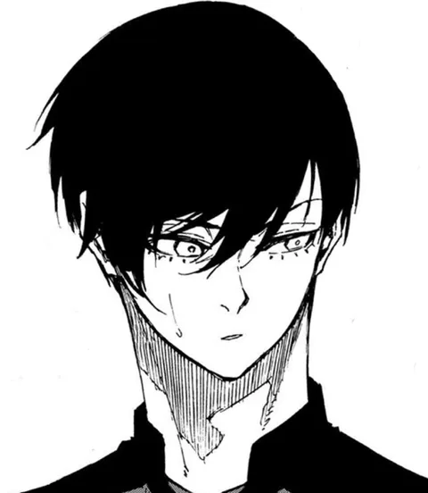
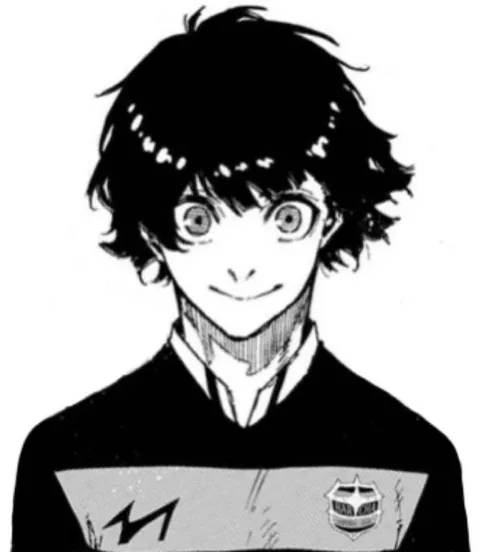
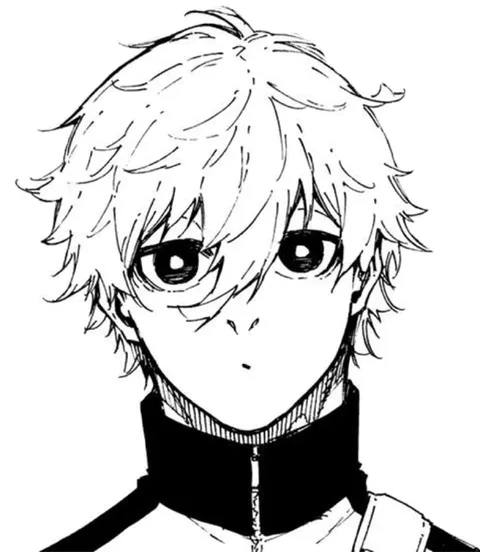
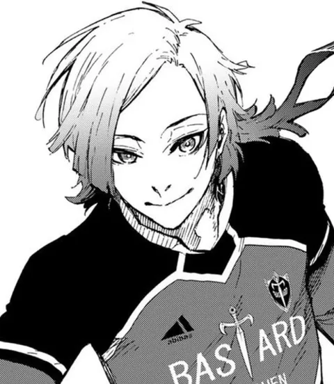
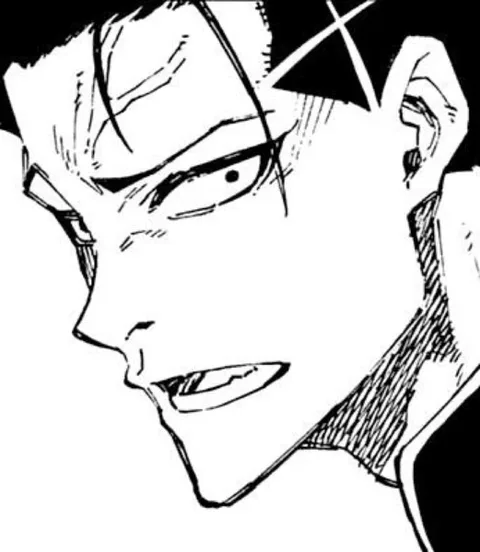
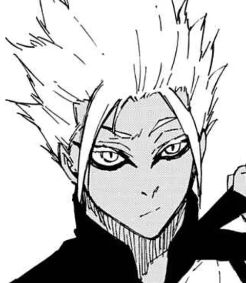
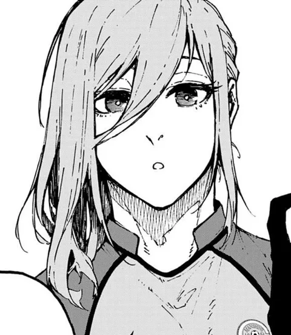

Blue Lock
 01 · Isagi — Visão espacial. Abrir ficha
01 · Isagi — Visão espacial. Abrir ficha
02 · Rin — Gênio destruidor. Abrir ficha
03 · Bachira — Drible do monstro. Abrir ficha
04 · Nagi — Controle de bola. Abrir ficha
05 · Kaiser — Kaiser Impact. Abrir ficha
06 · Barou — O Rei. Abrir ficha
07 · Shidou — Explosão. Abrir ficha
08 · Chigiri — Velocidade. Abrir ficha
Projeto da Federação Japonesa de Futebol
300 atacantes. 1 sobrevivente.
Crie o atacante mais egoísta do mundo.
Sala de controle do Ego
Os monitores do dia: desafio, x1 ao vivo, jogador em alta e o seu progresso. Tudo fica guardado só no seu navegador.
Desafio do dia
Quem é o egoísta?
Adivinhe o personagem do dia pelas pistas.
Jogar agora →x1 do dia · ao vivo
Duelo x1
Dois atacantes do dia se enfrentam lance a lance.
Jogador em alta
Sorteado por dia
Um atacante diferente em destaque a cada dia.
Ego fala
“Quem passa a bola por medo já perdeu o lance.”
frases do site · não são falas oficiais
Continuar lendo
Modo Mangá
A história em capítulos de storyboard.
Começar a ler →Última ficha vista
Nenhuma ainda
Abra uma ficha e ela aparece aqui.
Escolher uma ficha →Sua temporada
Temporada Egoísta
Seu ranking do 300 ao 1.
Arquivo · 212 fichas
Todos os personagens, com busca por nome ou Arma.
Ver os 212 →O projeto Blue Lock
Mangá de Muneyuki Kaneshiro (roteiro) e Yusuke Nomura (arte), publicado na Weekly Shōnen Magazine desde 2018, com anime do estúdio 8bit (2022). Após a eliminação do Japão na Copa de 2018, a Federação Japonesa reúne 300 atacantes jovens numa instalação isolada para criar o atacante mais egoísta do mundo.